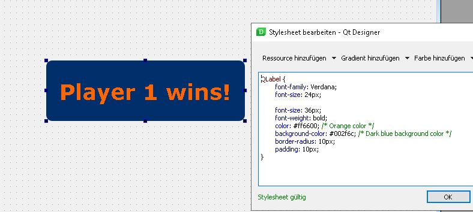

Including Win Screen (Nico)
If one of the players' health drops to 0, a win screen appears.
Player 1 wins:
Player 2 wins:
The UI is made in Qt Designer:
- The screenshot shows the stylesheet of the button, which changes the visual appearance.
The winscreen class:

- If the win condition is fulfilled, the win screen will appear on the screen.
- Clicking the "Play again" button should start an instant rematch.
- The "Quit" button should lead back to the main menu.
The win condition:

- If a dead robot is detected, we let the win screen appear by using the setCentralWidget function.
- It's the same way we switch between menu windows.